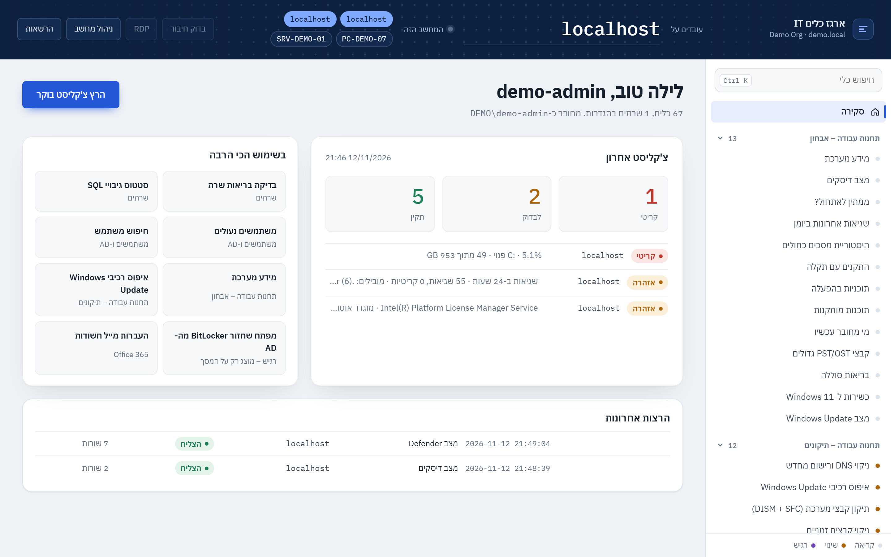
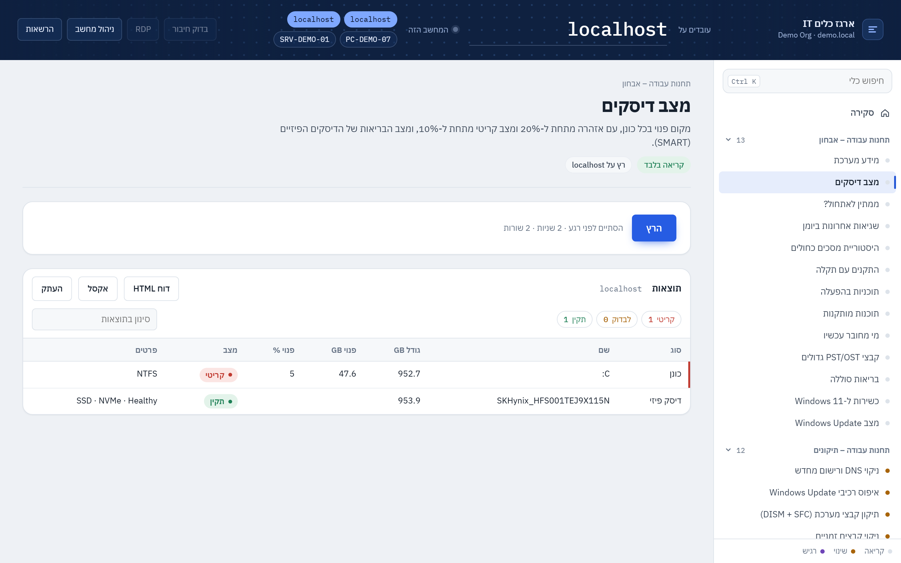

הכלים בממשק
כל כלי מסומן לפי רמת הסיכון. כלים שמשנים הגדרות מבקשים אישור, וכל הרצה נרשמת ביומן.
תחנות עבודה – אבחון 13
- מידע מערכתקריאה בלבד
מערכת הפעלה וגרסה מדויקת, דגם, מספר סריאלי, מעבד, זיכרון, דומיין, משתמש מחובר וזמן פעילות מאז ההפעלה האחרונה.
- מצב דיסקיםקריאה בלבד
מקום פנוי בכל כונן, עם אזהרה מתחת ל-20% ומצב קריטי מתחת ל-10%, ומצב הבריאות של הדיסקים הפיזיים (SMART).
- ממתין לאתחול?קריאה בלבד
בודק את כל המקומות שבהם Windows מסמן שנדרש אתחול: עדכונים, התקנות, שינוי שם מחשב וקבצים שממתינים להחלפה.
- שגיאות אחרונות ביומןקריאה בלבד
שגיאות ואירועים קריטיים מהיומנים System ו-Application, מקובצים לפי מקור וממוינים לפי כמות, כדי לראות מה חוזר על עצמו.
- היסטוריית מסכים כחוליםקריאה בלבד
קריסות (BugCheck), כיבויים לא תקינים (Kernel-Power 41) וקבצי Minidump ב-90 הימים האחרונים.
- התקנים עם תקלהקריאה בלבד
התקנים עם סימן קריאה במנהל ההתקנים: דרייבר חסר, התקן שלא עולה או התקן מושבת.
- תוכניות בהפעלהקריאה בלבד
כל מה שעולה עם המחשב, כולל Run ותיקיית Startup. טוב לבדיקת מחשב איטי.
- תוכנות מותקנותקריאה בלבד
רשימת תוכנות עם גרסה, יצרן ותאריך התקנה. אפשר לסנן לפי שם.
- מי מחובר עכשיוקריאה בלבד
משתמשים מחוברים וסשנים מנותקים, כולל ID. שימושי במיוחד בשרת Terminal.
- קבצי PST/OST גדוליםקריאה בלבד
מוצא קבצי Outlook בכל הפרופילים. מעל 20GB Outlook נהיה איטי, ומעל 50GB הוא עלול להיתקע.
- בריאות סוללהקריאה בלבד
קיבולת מקורית מול קיבולת היום ומספר מחזורי טעינה. מתחת ל-70% כדאי להחליף.
- כשירות ל-Windows 11קריאה בלבד
בודק TPM 2.0, Secure Boot, UEFI, זיכרון ודיסק. את המעבד צריך לאמת מול רשימת Microsoft, והכלי מציג את הדגם.
- מצב Windows Updateקריאה בלבד
מתי הותקן העדכון האחרון, מצב השירותים, האם יש WSUS או מדיניות, וכמה עדכונים ממתינים. החיפוש עשוי לקחת כמה דקות.
תחנות עבודה – תיקונים 12
- ניקוי DNS ורישום מחדשמשנה הגדרות
מנקה את זיכרון ה-DNS של המחשב ורושם אותו מחדש בשרת ה-DNS. לא מנתק את הרשת.
- איפוס רכיבי Windows Updateמשנה הגדרות
התיקון הקלאסי כשעדכונים נתקעים או נכשלים (למשל 0x80070003). התיקיות לא נמחקות, רק משנים להן שם.
- תיקון קבצי מערכת (DISM + SFC)משנה הגדרות
מריץ DISM RestoreHealth ואחריו SFC. לוקח 15 עד 40 דקות, ולא צריך לסגור את החלון בינתיים.
- ניקוי קבצים זמנייםמשנה הגדרות
מוחק קבצים זמניים שלא שונו X ימים: Windows Temp, Temp של משתמשים, Cache של דפדפנים, קבצי קריסה והורדות ישנות של Windows Update. לא נוגע במסמכים ובהורדות.
- איפוס Cache של Teamsמשנה הגדרות
הפתרון הקבוע ל-Teams שלא נטען, לא מסתנכרן או מציג מסך לבן. מטפל ב-Teams הקלאסי ובחדש. התיקיות מקבלות שם חדש ולא נמחקות.
- תיקון העתק-הדבק ב-RDPמשנה הגדרות
מאפשר העתקה בין המחשבים בחיבור מרחוק. מריצים על המחשב שמתחברים אליו. השירות לא מופעל מחדש, כדי לא לנתק משתמשים.
- הפעלת שולחן עבודה מרוחקמשנה הגדרות
מפעיל RDP ופותח את כללי חומת האש. NLA (אימות לפני חיבור) נשאר פעיל, וזה המצב הבטוח.
- סנכרון שעון ואזור זמןמשנה הגדרות
מסנכרן את השעון מול מקור הזמן (ה-DC בדומיין). שעון לא מסונכרן גורם לתקלות כניסה ב-Kerberos ובאתרים.
- ניתוק סשן תקועמשנה הגדרות
מבצע Log off לסשן לפי ID (את ה-ID רואים ב"מי מחובר עכשיו"). פותר משתמש תקוע ב-RDP או בשרת Terminal.
- אתחול מתוזמןמשנה הגדרות
מאתחל את היעד בעוד X דקות. המשתמש מקבל הודעה על המסך. לביטול: להריץ שוב ולהקליד "בטל".
- יצירת נקודת שחזורמשנה הגדרות
יוצר נקודת שחזור לפני שינוי גדול. עובד רק על Windows 10/11 ולא על שרתים. Windows מגביל ליצירה אחת ב-24 שעות.
- תיקון מדפסות תקועות (Spooler)משנה הגדרות
משחרר תור הדפסה תקוע. העבודות התקועות מועברות לתיקיית גיבוי ולא נמחקות.
הקמה ושדרוגים 5
- התקנת תוכנות סטנדרטיותמשנה הגדרות
מתקין דרך winget את רשימת StandardApps מ-config, או את מה שתקליד. רץ בשקט, בלי שאלות.
- תוכנות שיש להן עדכוןקריאה בלבד
רשימה של כל התוכנות שיש להן גרסה חדשה ב-winget. לא מעדכן כלום.
- עדכון תוכנותמשנה הגדרות
מעדכן דרך winget את כל התוכנות, או רק את המזהים שתקליד. תוכנות פתוחות עלולות להיסגר.
- שינוי שם וצירוף לדומייןמשנה הגדרות
למחשב חדש: נותן שם לפי השיטה שלך ומצרף לדומיין (אפשר גם ל-OU מסוים). לא מאתחל לבד.
- שדרוג Windows (22H2 / 11)משנה הגדרות
מוריד את כלי השדרוג הרשמי של Microsoft, מוודא שהוא חתום, ומריץ אותו ברקע. הקבצים והתוכנות נשמרים. לוקח 1-2 שעות, והמחשב יאותחל לבד בסוף.
מדפסות 3
- מצב מדפסות ותוריםקריאה בלבד
כל המדפסות ביעד: פורט, דרייבר, Offline, תקלות נייר וטונר, וכמה עבודות בתור.
- תיקון מדפסות תקועות (Spooler)משנה הגדרות
משחרר תור הדפסה תקוע. העבודות התקועות מועברות לתיקיית גיבוי ולא נמחקות.
- הוספת מדפסת רשת לכל המשתמשיםמשנה הגדרות
מוסיף מדפסת משותפת מהשרת לכל המשתמשים במחשב. היא מופיעה אצל כל משתמש בכניסה הבאה.
שרתים 5
- בדיקת בריאות שרתקריאה בלבד
דיסקים, שירותים אוטומטיים שנעצרו, זמן פעילות, ממתין לאתחול ושגיאות קריטיות מ-24 השעות האחרונות. הכול בטבלה אחת עם מצב לכל שורה.
- סטטוס גיבויי SQLקריאה בלבד
לכל מסד נתונים מוצג מתי רץ הגיבוי המלא, ה-Diff וה-Log האחרונים, והאם הגיבוי כלל Checksum. המסדים שהוגדרו כחובה ב-config מסומנים כקריטיים אם אין להם גיבוי עדכני.
- Jobs של SQL Agentקריאה בלבד
כל ה-Jobs עם התוצאה של ההרצה האחרונה, וזמן ההרצה. Jobs שנכשלו מסומנים באדום.
- תעודות שעומדות לפוגקריאה בלבד
תעודות SSL בחנות של המחשב (LocalMachine\My) וכמה ימים נשארו לכל אחת.
- שיתופים פתוחים מדיקריאה בלבד
כל השיתופים וההרשאות שלהם. שיתוף שפתוח ל-Everyone או ל-Authenticated Users עם הרשאת כתיבה מסומן לבדיקה.
משתמשים ו-AD 8
- חיפוש משתמשקריאה בלבד
חיפוש לפי שם משתמש או שם מלא. מוצג: פעיל או מושבת, נעול, כניסה אחרונה, מתי שונתה הסיסמה, OU וקבוצות.
- משתמשים נעוליםקריאה בלבד
כל החשבונות שנעולים כרגע אחרי ניסיונות סיסמה שגויים.
- שחרור נעילהמשנה הגדרות
משחרר נעילה של חשבון. הסיסמה לא משתנה.
- איפוס סיסמהמשנה הגדרות
יוצר סיסמה זמנית אקראית ומחייב החלפה בכניסה הבאה. הסיסמה מוצגת פעם אחת על המסך ולא נשמרת בלוג.
- פתיחת משתמש חדש לפי תבניתמשנה הגדרות
פותח משתמש עם אותן קבוצות, OU, מחלקה וכתובת כמו משתמש קיים (למשל מזכירה אחרת באותו סניף). הסיסמה הזמנית מוצגת פעם אחת.
- השבתת עובד שעוזבמשנה הגדרות
משבית את החשבון ורושם בתיאור שלו מתי ומי השבית. החשבון לא נמחק והקבוצות לא מוסרות, אלא רק מוצגות, כך שאפשר להחזיר הכול.
- חברי קבוצהקריאה בלבד
כל החברים בקבוצה, כולל קבוצות מקוננות, עם סטטוס וכניסה אחרונה. טוב לבדוק מי ב-Domain Admins.
- משתמשים ומחשבים לא פעיליםקריאה בלבד
חשבונות פעילים שלא התחברו X ימים. אלה מועמדים להשבתה ומהווים סיכון אבטחה.
Office 365 6
- רשימת תפוצה: כל החבריםקריאה בלבד
כל החברים ברשימת תפוצה, כולל רשימות מקוננות (בלי כפילויות), עם סוג החבר. ריק = רשימה של כל רשימות התפוצה.
- העברות מייל חשודותקריאה בלבד
תיבות שמעבירות מייל החוצה. העברה לכתובת חיצונית היא סימן נפוץ לתיבה שנפרצה. אפשר לסרוק גם כללי Inbox (איטי).
- הרשאות לתיבותקריאה בלבד
FullAccess, SendAs ו-SendOnBehalf לתיבה מסוימת. ריק = כל התיבות המשותפות.
- גודל תיבות וכניסה אחרונהקריאה בלבד
גודל מול מכסה לכל תיבה. מעל 85% מסומן. תיבה שלא נכנסו אליה 90 יום מסומנת לבדיקה (אולי אפשר לחסוך רישיון).
- רישיונות: בשימוש מול פנוייםקריאה בלבד
כמה רישיונות קנויים מול בשימוש, ומי מחזיק רישיון. משתמש חסום עם רישיון, או משתמש שלא נכנס 60 יום, מסומן.
- מצב MFA לכל המשתמשיםקריאה בלבד
מי רשום ל-MFA ובאילו שיטות. מנהל בלי MFA זה הסיכון מספר 1.
אבטחה 4
- מי Local Adminקריאה בלבד
חברי קבוצת Administrators המקומית. כל מי שהוא לא Administrator מובנה ולא Domain Admins מסומן לבדיקה.
- מצב BitLockerקריאה בלבד
מצב ההצפנה בכל כונן וסוגי המפתחות. כדי לראות את מפתח השחזור עצמו, משתמשים בכלי בקטגוריה 'רגיש'.
- מצב Defenderקריאה בלבד
אנטי-וירוס והגנה בזמן אמת, גיל החתימות, סריקה אחרונה, Tamper Protection ואיומים שזוהו ב-30 הימים האחרונים.
- כניסות שנכשלו (מה-DC)קריאה בלבד
ניסיונות סיסמה שגויים ונעילות, מקובצים לפי משתמש ומקור. 20 ניסיונות ומעלה ממקור אחד יכולים להעיד על ניחוש סיסמאות או על מכשיר עם סיסמה ישנה.
רגיש – מוצג רק על המסך 5
- סיסמאות WiFi שמורותרגיש
כל רשתות ה-WiFi השמורות במחשב עם הסיסמה. הקבצים הזמניים נמחקים מיד.
- מפתחות רישיון Windows/Officeרגיש
מפתח היצרן מה-BIOS (OEM), המפתח המותקן מהרישום, ו-5 התווים האחרונים של כל רישיון Windows ו-Office עם הסטטוס שלו.
- מפתח שחזור BitLocker מהמחשברגיש
מפתח השחזור (48 ספרות) של כל כונן מוצפן ביעד.
- מפתח שחזור BitLocker מה-ADרגיש
כשמחשב נתקע במסך השחזור: מקלידים את שם המחשב או את 8 התווים הראשונים של ה-Key ID שעל המסך, ומקבלים את המפתח מה-AD.
- בדיקת קבצים ב-VirusTotalרגיש
בודק קובץ או תיקייה (עד 50 קבצים). ברירת המחדל שולחת רק את ה-Hash, והקובץ לא יוצא מהמחשב. העלאה של קובץ לא מוכר רק אם בחרת "כן". דורש VirusTotalApiKey ב-config.
רשת 3
- בדיקת חיבור ופורטיםקריאה בלבד
מהמחשב שלך אל היעד: Ping, תרגום DNS, ובדיקה אם הפורטים פתוחים (RDP 3389, SMB 445, WinRM 5985, SQL 1433, HTTP/S).
- בדיקת גישה מרחוק (WinRM)קריאה בלבד
בודק אם הכלי יכול להריץ פקודות על היעד. אם לא, מוצגת הסיבה ומה עושים. זה מה שכפתור "בדוק חיבור" מריץ.
- סריקת מכשירים ברשתקריאה בלבד
Ping לכל 254 הכתובות ברשת, עם שם וכתובת MAC. טוב למציאת מדפסת, מצלמה או מחשב "שנעלם".
דוחות 3
- צ'קליסט בוקר (כל השרתים)קריאה בלבד
עובר על כל השרתים וה-DC מ-config ובודק בריאות, תעודות, גיבויי SQL, Jobs שנכשלו, משתמשים נעולים וקבצי גיבוי בתיקיות (BackupFolders). נשמר אוטומטית כדוח HTML. מה שלא תקין מופיע ראשון.
- מלאי מחשביםקריאה בלבד
אוסף מכל המחשבים: דגם, סריאלי, מעבד, זיכרון, דיסק, גרסת Windows ומשתמש מחובר. נשמר כ-CSV שנפתח באקסל.
- הפעלת דוח בוקר אוטומטימשנה הגדרות
יוצר משימה מתוזמנת במחשב שלך שמריצה את צ'קליסט הבוקר בימים א'-ה'. הדוח נפתח לבד, ואם יש בעיות מוצגת התראה.
הסקריפטים העצמאיים
כל סקריפט עם עזרה מובנית (Get-Help), פרמטרים במקום שמות קשיחים, ו--WhatIf כשהוא משנה משהו.
sql/Backup-SqlDatabases.ps1 | Backs up SQL Server databases (FULL / DIFF / LOG), verifies every backup and applies a safe retention. | .\Backup-SqlDatabases.ps1 -SqlInstance SQL01 -BackupPath '\\<FILE_SERVER>\<BACKUP_SHARE>' -RetentionDays 14 |
sql/Invoke-BackupRetention.ps1 | Grandfather-father-son retention for SQL Server backup folders (default: 10 daily, 4 weekly, 3 monthly). | .\Invoke-BackupRetention.ps1 -Root '\\<FILE_SERVER>\<BACKUP_SHARE>\Sales' |
sql/Invoke-SqlFile.ps1 | Runs a .sql file against SQL Server with Windows authentication and keeps a full evidence log. | .\Invoke-SqlFile.ps1 -File .\check-jobs.sql -Out .\logs\check-jobs.txt -Server SQL01 |
sql/New-SqlBackupJob.sql | | |
m365/Export-DistributionLists.ps1 | Exports every Exchange Online / Microsoft 365 distribution list (and optionally Microsoft 365 groups) | .\Export-DistributionLists.ps1 -AdminUpn '<ADMIN_UPN>' |
m365/Set-AppMailSendScope.ps1 | Limits an Entra ID app so it can send mail ONLY as specific mailboxes, using Exchange Online | .\Set-AppMailSendScope.ps1 -AppId '<APP_ID_GUID>' -ServicePrincipalObjectId '<ENTERPRISE_APP_OBJECT_ID>' ` |
m365/Set-OneDrivePolicies.ps1 | Configures the OneDrive sync client on a PC through its policy registry keys: silent sign-in with the | .\Set-OneDrivePolicies.ps1 -SilentAccountConfig -FilesOnDemand -WhatIf |
m365/Watch-AppSecretExpiry.ps1 | Daily tripwire that warns, loudly and early, before an Entra ID (Azure AD) app client secret expires. | .\Watch-AppSecretExpiry.ps1 -AppName 'Report Mailer' -ExpiryDate 2028-08-09 -Register |
windows-update/Remove-WindowsUpdatePackage.ps1 | Uninstalls a problematic Windows update (by KB number or by DISM package name) and can pause | .\Remove-WindowsUpdatePackage.ps1 -KB 5000808 -WhatIf |
windows-update/Reset-WindowsUpdate.ps1 | Repairs a stuck Windows Update: stops the update services, renames the SoftwareDistribution and | .\Reset-WindowsUpdate.ps1 -WhatIf |
outlook/Backup-OutlookData.ps1 | Backs up the current user's Outlook data folders (signatures, roaming settings, local data files) | .\Backup-OutlookData.ps1 -Destination '\\<FILE_SERVER>\<SHARE>\OutlookBackup' |
outlook/Remove-OfficeMsiPatch.ps1 | Removes a single Office (MSI-based) update patch - the classic fix when an Office update breaks Outlook. | .\Remove-OfficeMsiPatch.ps1 -WhatIf |
outlook/Set-OutlookRegistryFixes.ps1 | Applies (or reverts) common Outlook per-user registry fixes for every installed Outlook version. | .\Set-OutlookRegistryFixes.ps1 -DisableTnef -LegacyGalDialog -WhatIf |
network/Add-FirewallPortRule.ps1 | Opens Windows Firewall ports for common line-of-business needs (SQL Server, RDP, ping, custom ports) | .\Add-FirewallPortRule.ps1 -Preset SqlServer -RemoteAddress LocalSubnet |
network/Connect-NetworkDrives.ps1 | Maps a set of network drives from a simple CSV (or hashtable), persistently, without ever storing | .\Connect-NetworkDrives.ps1 -CsvPath .\drives.csv |
network/Export-FirewallConfig.ps1 | Exports the Windows Firewall policy (.wfw, re-importable) and a readable list of all rules, | .\Export-FirewallConfig.ps1 -OutputFolder 'E:\FirewallBackup' |
network/Repair-TimeSync.ps1 | Fixes Windows time synchronization: points the Windows Time service at the domain hierarchy or at | .\Repair-TimeSync.ps1 # domain member: back to domain hierarchy + resync |
network/Set-DnsServers.ps1 | Sets (or resets to DHCP) the DNS servers of a network adapter, then flushes and re-registers DNS. | .\Set-DnsServers.ps1 -InterfaceAlias Ethernet -DnsServers '<DNS_PRIMARY>','<DNS_SECONDARY>' |
endpoint/Clear-PrintSpooler.ps1 | Clears stuck print jobs: stops the Print Spooler, empties the spool folder and starts it again. | .\Clear-PrintSpooler.ps1 |
endpoint/Get-EndpointInfo.ps1 | Collects a one-file support/inventory report of a workstation: user, network, OS, hardware | .\Get-EndpointInfo.ps1 |
endpoint/Get-LocalAdmins.ps1 | Lists the members of the local Administrators group on one or many computers and exports them to CSV. | .\Get-LocalAdmins.ps1 |
endpoint/New-ShadowCopy.ps1 | Creates a Volume Shadow Copy ("Previous Versions" snapshot) of one or more volumes, and optionally | .\New-ShadowCopy.ps1 -Volume C,D |
endpoint/Repair-RdpClientLicenseStore.ps1 | Fixes the Remote Desktop client error "The remote computer disconnected the session because of an | .\Repair-RdpClientLicenseStore.ps1 -WhatIf |
endpoint/audio/Get-AudioDiagnostics.ps1 | Diagnoses choppy / stuttering / crackling audio on Windows 10/11 and writes everything to one report. | .\Get-AudioDiagnostics.ps1 |
endpoint/audio/Repair-AudioStutter.ps1 | Neutralises the Nahimic audio-processing chain and the secondary causes of audio stutter - reversibly. | .\Repair-AudioStutter.ps1 |
endpoint/audio/Test-AudioFix.ps1 | Verifies what really changed after Repair-AudioStutter.ps1 -Apply, with a PASS / FAIL per check. | .\Test-AudioFix.ps1 |
ad/Move-StaleComputers.ps1 | Finds Active Directory computer accounts that have not logged on for N days, reports them, and | .\Move-StaleComputers.ps1 -SearchBase 'OU=Workstations,DC=contoso,DC=local' -DaysInactive 90 |